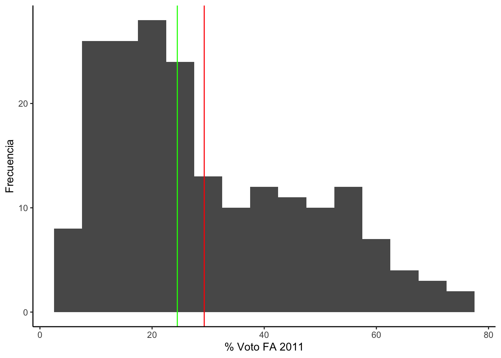

Encuesta Nacional Docente 2020
Cada dos años, el Ministerio de Educación realiza una encuesta a una
muestra de docentes de educación básica en el Perú. La última disponible
fue hecha en 2020, en medio de la pandemia del COVID-19. Las bases de
datos y cuestionarios de esta encuesta se encuentran disponibles aquí.
En esta ubicación se encuentra la base de datos, que puede ser
descargada y leída en R con el siguiente código.
library(rio)
endo2020 = import("bases/ENDO_REMOTO_2020.dta")
#CAMBIAR A PROPIO DIRECTORIO DE TRABAJO
Estimación puntual
De una variable numérica, la medida de tendencia central más útil es
la media. La encuesta a docentes incluye la pregunta:
- ¿A cuántos estudiantes le brinda acompañamiento como docente de aula
en esta IE? (Ver cuestionario)
De esta pregunta podemos preguntarnos: ¿A cuántos alumnos en promedio
acompaña el docente peruano en aula? Esta encuesta tiene una pregunta
que nos permite calcular esta media y la desviación estándar.
library(dplyr)
library(tidyverse)
endo2020 |>
summarize(Media =mean(P1_6, na.rm = T), Desv.Std = sd(P1_6, na.rm = T))
## Media Desv.Std
## 1 39.98644 50.76707
Es decir, un profesor promedio en Perú acompaña aproximadamente a 40
alumnos en aula. ¿Existen diferencias en el número promedio de alumnos
que acompañan docentes hombres y docentes mujeres?
Cuando se importa la base de datos, la variable sexo, P1_1, es
definida como numérica.
str(endo2020$P1_1)
## num [1:28216] 1 2 2 NA NA 2 1 NA NA NA ...
## - attr(*, "label")= chr "Sexo"
## - attr(*, "format.stata")= chr "%12.0g"
## - attr(*, "labels")= Named num [1:2] 1 2
## ..- attr(*, "names")= chr [1:2] "Masculino" "Femenino"
La podemos transformar a una variable de tipo factor.
endo2020 = endo2020 |>
mutate(sexo = factor(P1_1, labels=c("Hombre", "Mujer")))
Calculamos los datos para hombres y mujeres.
tabla1 = endo2020 |>
group_by(sexo) |>
summarize(Media = mean(P1_6, na.rm = T),
Desv.Std = sd(P1_6, na.rm = T),
Mediana = median(P1_6, na.rm = T))
tabla1
## # A tibble: 3 × 4
## sexo Media Desv.Std Mediana
## <fct> <dbl> <dbl> <dbl>
## 1 Hombre 52.2 60.4 28
## 2 Mujer 34.1 44.2 22
## 3 <NA> NaN NA NA
Se encuentra que los docentes hombres acompañan, en promedio, a 52
alumnos, mientras que las docentes mujeres acompañan a 34 alumnos, una
diferencia de 18 alumnos en promedio.
Todos estos resultados son puntuales y aplican para la muestra de
28,216 profesores.
Para una comparación gráfica, se puede usar boxplot.
library(ggplot2)
ggplot(endo2020, aes(y=P1_6, x=sexo))+
geom_boxplot()
## Warning: Removed 9266 rows containing non-finite values
## (`stat_boxplot()`).

endo2020 = endo2020 |>
mutate(condicion = factor(P1_7, labels=c("Nombrado", "Contratado x concurso", "Contratado otro")))
tabla2 = endo2020 |>
group_by(condicion) |>
summarize(Media = mean(P1_6, na.rm = T),
Desv.Std = sd(P1_6, na.rm = T),
Mediana = median(P1_6, na.rm = T))
tabla2
## # A tibble: 4 × 4
## condicion Media Desv.Std Mediana
## <fct> <dbl> <dbl> <dbl>
## 1 Nombrado 36.9 48.0 23
## 2 Contratado x concurso 43.7 53.6 23
## 3 Contratado otro 50.6 66.1 23
## 4 <NA> NaN NA NA
library(ggplot2)
library(tidyverse)
endo2020 |>
drop_na(P1_6) |>
ggplot(aes(y=P1_6, x=condicion))+
geom_boxplot()

ggplot(subset(endo2020, !is.na(P1_6)), aes(y=P1_6, x=condicion))+
geom_boxplot()

Si se quiere hacer un gráfico de barras simples para mostrar la media
del número de alumnos por sexo del profesor, se puede usar:
ggplot(tabla1, aes(x=sexo, y=Media)) +
geom_bar(stat = "identity") +
ggtitle("Número de alumnos promedio por sexo del docente") +
xlab("Sexo del docente") +
geom_text(aes(label=round(Media,1)), vjust=1.30, color="white", size=3)+
theme_minimal()
## Warning: Removed 1 rows containing missing values
## (`position_stack()`).
## Warning: Removed 1 rows containing missing values (`geom_text()`).

¿Cómo se pueden extrapolar estos resultados al universo de profesores
peruanos?
Estimación por intervalos
Tanto la media muestral, como la proporción muestral, son
estimaciones puntuales, basados en los resultados de la muestra. Es
decir, estas son estimaciones correspondientes a las 28,216
observaciones que son parte de este estudio. Sin embargo, esta muestra
forma parte de un universo o población (el conjunto de profesores del
Perú), del que seguramente se quiere decir algo.
El mismo razonamiento aplica a una encuesta de opinión convencional.
La ficha técnica de una encuesta menciona, generalmente, el tamaño de
muestra y la población a la que se busca representar. También se puede
encontrar el margen de error (+/- 2.8%) y el nivel de confianza
(generalmente de 95%).(Ver, por ejemplo, la encuesta
de opinión de agosto 2023 de Ipsos.
El proceso mediante el cual se parte de una muestra para decir algo
de un universo o población es un proceso de inferencia y es parte de la
estadística inferencial. La estadística inferencial introduce la
incertidumbre en los estimados, debido al hecho de
estar trabajando con una muestra y no con el total de observaciones del
universo.
Un breve paseo por las probabilidades
Partimos del hecho que en el común de las investigaciones uno tiene
que seleccionar un conjunto de observaciones que son parte del total,
que es muy costoso e ineficiente hacer un estudio de la población
completa. La analogía es, por ejemplo, que para un análisis de sangre se
extrae una “muestra” de sangre y no el total de sangre del cuerpo.
A esto le sumamos el hecho que nuestras herramientas de recojo de
información son imperfectas. Un estudio transversal, por ejemplo,
debería recoger información de los individuos en un corte en el tiempo,
sin embargo, muchos estudios no son una “foto del momento”, pues las
observaciones toman tiempo y abarcan horas, días o semanas, sino
meses.
Es por este motivo que para un estudio se selecciona “una” muestra,
un conjunto de observaciones que son una fracción del total. Esta
selección se hace siguiendo procedimientos aleatorios, de tal manera que
cualquier unidad del universo tenga la misma probabilidad de ser
seleccionada.
El punto es que esta única muestra es solo una de las múltiples
muestras teóricas que se podrían seleccionar de un universo
determinado.
Partamos de un ejemplo muy simple. Para un universo de 5 personas, se
pueden extraer 10 muestras de tamaño 2 diferentes.

La fórmula para calcular el número de muestras probables es la de
combinatorias, que incluye el operador factorial. Si aplicamos esta
fórmula a un ejemplo de un universo más grande, por ejemplo, un salón de
clase de 50 alumnos, donde se quiere saber cuántas muestras diferentes
de tamaño 4 se pueden extraer. Según la fórmula:
\[
\frac{50!} {(50-4)! 4!} = \frac{50!} {46! 4!} = \frac{50*49*48*47}
{4*3*2} = 230,300
\]
Para un sondeo de opinión, donde el universo son 24 millones de
individuos y se quiere saber cuántas muestras diferentes de tamaño 1,500
se pueden extraer, este número de muestras probables es muuuuy
grande.
Volviendo al ejemplo muy simple de 5 personas donde se quiere extraer
una muestra de 2 y se quiere inferir los datos de la muestra de dos
variables: sexo y edad.
Se tiene un universo de 5 individuos, cada uno con su sexo y edad. En
la población la proporción de hombres es de 60% y la media de edad es de
34 años.

Si queremos extraer una muestra de tamaño de 2 de ese universo, se
tienen 10 posibles muestras, cada una tendrá una aproximación de la
proporción de hombres y de la media de edad. Dependiendo de qué muestra
de todas las posibles sea la que se observa, los estadísticos serán una
aproximación de los parámetros poblacionales.
En el caso de la proporción de hombres, se puede tabular los
resultados de cada muestra probable.
| 0% |
1 |
X |
| 50% |
5 |
XXXXX |
| 100% |
4 |
XXXX |
Incluso se podría calcular un promedio de todas esas proporciones
muestrales (100+50+100+…+50/10), y ese resultado sería 65%, un resultado
algo cerca de la proporción poblacional de 60%.
Este mismo procedimiento se podría hacer para todas las 230,300
muestras probables de tamaño 4 de un universo de 50 alumnos. Cada uno de
los 50 alumnos será hombre o mujer y la proporción poblacional de
hombres se puede calcular en ese total. A su vez, cada muestra de 4,
tendrá una proporción muestral que tendrá valores (0 si no hay ningún
hombre, 25% si hay 1 hombre, 50% si hay 2 hombres, 75% si hay 3 hombres
y 100% si todos son hombres). Finalmente, se puede contar cuántas de las
230,300 muestras probables tuvieron 0%, 25%, 50%, 75% y 100% de hombres.
Esta distribución se llama “distribución de
muestreo”.
Si quisiéramos ampliar el tamaño de muestra a 10, entonces los
resultados posibles serían, 0, 10, 20, 30, 40, 50, 60, 70, 80, 90 y
100%. También podríamos contar cuántas muestras tienen estos
resultados.
De un universo más grande, se puede plantear extraer muestras de
tamaño más grande. Por ejemplo, teóricamente se puede pensar que de un
universo de 20 millones, se pueden extraer casi infinitas muestras de
tamaño 1,500. Cada una de estas muestras tendrá un estadístico que será
una aproximación del parámetro. Los estadísticos de todas estas casi
infinitas muestras se pueden tabular y graficar.
Teorema del límite central
Este teorema muestra que la distribución de muestreo se
aproxima a una distribución normal, con centro en el parámetro,
en la medida que el tamaño de muestra aumenta.
Esto se puede mostrar gráficamente en el Tablero de Galton, ver aquí
Por lo tanto, la distribución de muestreo de N grandes para cualquier
variable seguirá las características de cualquier curva normal. Toda
curva normal es simétrica y sabemos que si desde el centro se desplaza 1
desviación estándar en ambas direcciones, entre esos límites estarán el
68.3% de todas las observaciones. Si se desplaza 2 desviaciones estándar
en ambas direcciones, se acumularían el 95.4% de todas las
observaciones. Con 3 desviaciones estándar hacia ambos lados, se
acumularía el 99.7% de todas las observaciones.

Traduciendo a la distribución de muestreo, la idea es que si se
tabulan y se hace un gráfico de barras de los resultados de todas las
muestras probables, se tendría una curva normal con centro en el
parámetro. Sabríamos que si desde ese centro nos desplazamos 2
desviaciones estándar en ambas direcciones, entre esos límites estarían
el 95% de todas las muestra probables.
Es altamente probable (95% probable) que si en una investigación se
extrae una sola muestra, esta sea parte del 95% de muestras posibles a
+/- 2 desviaciones estándar del parámetro. De la misma manera, es poco
probable (5% probable) que una sola muestra no esté a +/- 2 desviaciones
estándar del parámetro.
Estimación de intervalos de confianza
La distribución de muestreo es teórica, muy difícilmente se puede
calcular en la realidad. Regularmente tampoco sabemos los datos del
universo. Lo que tenemos a mano es 1 muestra observada.
Es decir, en un estudio de las muuuuuchas muestras probables, se
selecciona 1 muestra.
En el caso de la encuesta ENDO, por ejemplo, del universo de
profesores peruanos, se seleccionó 1 muestra de 28,216 observaciones, de
las muuuuchas muestras de 28,216 individuos de la población total.
Si teóricamente sabemos que en la distribución muestral, el 95% de
todas las muestras están a +/- 2 desviaciones estándar del centro, que
coincide con el parámetro poblacional, es muy probable que la única
muestra que se ha observado sea parte de ese conjunto. De hecho, se
puede decir que se tiene 95% de probabilidades de que sea parte de ese
grupo.
Por lo tanto, si a partir del estadístico muestral, se aplica esta
distancia de +/- 2 errores estándar, se tiene 95% de probabilidades que
entre esos límites se incluya al valor del parámetro. Para verlo de
manera más visual, en la siguiente figura se tiene la distribución de
muestreo teórica (y desconocida), donde se marca la región que acumula
el 95% de todas las muestras probables.
Más abajo se marca los resultados de 2 muestras observadas. La
primera proporción muestral subestima la proporción poblacional. La
segunda, por el contrario, sobreestima la proporción poblacional. En el
primer caso, si a partir del estadístico muestral se aplica +/- 1.96
errores estándar (línea horizontal en negrita), se observa que el
parámetro poblacional está incluido en esos límites.
Es probable, como en el segundo caso, que otra muestra probable,
cuando se le aplique el intervalo de +/- 1.96 errores estándar, no
incluya al parámetro. Se observa que la línea en negrita no incluye la
linea vertical entrecortada que marca el valor del parámetro
poblacional.

Sin embargo, sabemos que es mucho más probable (95% de
probabilidades) que si una muestra observada es parte del 95% de
muestras alrededor del parámetro, este intervalo incluya al parámetro
poblacional. A estos límites le llamamos “intervalos de confianza”.
En cualquier investigación solo se cuenta con una muestra observada,
cuyo estadístico muestral, sea una media o un proporción, es una
aproximación del parámetro poblacional.
Para poder extrapolar desde la muestra hasta la población, se tiene
que construir un intervalo de confianza alrededor del estadístico
muestral. Este intervalo se construye aplicando la “distancia” de +/-
1.96 errores estándar, para tener una confianza de 95% de incluir al
parámetro poblacional.
Si se está extrapolando para una variable numérica, mediante la
media, el error estándar (o se) es:
\[
se = 1.96 * \frac{s} {\sqrt{n}}
\]
Si se está extrapolando para una variable categórica, mediante una
proporción, el error estándar (o se) es:
\[
se = 1.96 * \sqrt{\frac{(p * (1-p))} {n}}
\]
A manera de resumen, la siguiente tabla nos muestra el parámetro, el
estadístico puntual y el error estándar para cada tipo de variable y
cómo se forma el intervalo de confianza.

En estas fórmulas, se usa el símbolo “t” y “z” para referir a las
distribuciones teóricas que se usan. Para fines prácticos, cuando la
muestra es grande, ambas distribuciones son iguales. El valor de “t” o
“z” depende del nivel de confianza que queremos. Es decir, de la
probabilidad que queremos de que el intervalo incluya al parámetro. De
esta manera:
Z al 90% = 1.645
Z al 95% = 1.96
Z al 98% = 2.326
Z al 99% = 2.576
¿Qué pasa con el IC cuando se quiere mayor confianza? ¿Se vuelve más
o menos preciso?
En el ejemplo del cálculo del promedio de alumnos que atiende los
profesores, se puede añadir el cálculo de los intervalos de confianza en
ambos casos, para hombres y mujeres. El comando para hacer esto es
ciMean que es parte de la librería lsr.
library(lsr)
ciMean(endo2020$P1_6, na.rm = T)
## 2.5% 97.5%
## [1,] 39.26358 40.7093
Si se calculan los intervalos de confianza por grupos, estos se
pueden comparar.
library(lsr)
ci_alumxsexo = endo2020 |>
group_by(sexo) |>
summarise(Media = mean(P1_6, na.rm=T),
min = ciMean(P1_6, na.rm=T)[1],
max = ciMean(P1_6, na.rm=T)[2]
)
ci_alumxsexo
## # A tibble: 3 × 4
## sexo Media min max
## <fct> <dbl> <dbl> <dbl>
## 1 Hombre 52.2 50.7 53.8
## 2 Mujer 34.1 33.3 34.8
## 3 <NA> NaN NA NA
Se encuentra que la media de alumnos que atiende un docente hombre
esta entre 50.7 y 53.8 alumnos, mientras que en el caso de las docentes
mujeres está entre 33.3 y 34.8 alumnos en aula.
¿Qué más se puede decir de esta comparación entre intervalos de
confianza? ¿Cómo graficar estos intervalos de confianza?
Bibliografía
